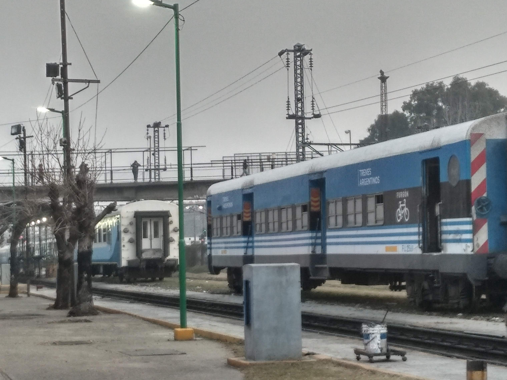
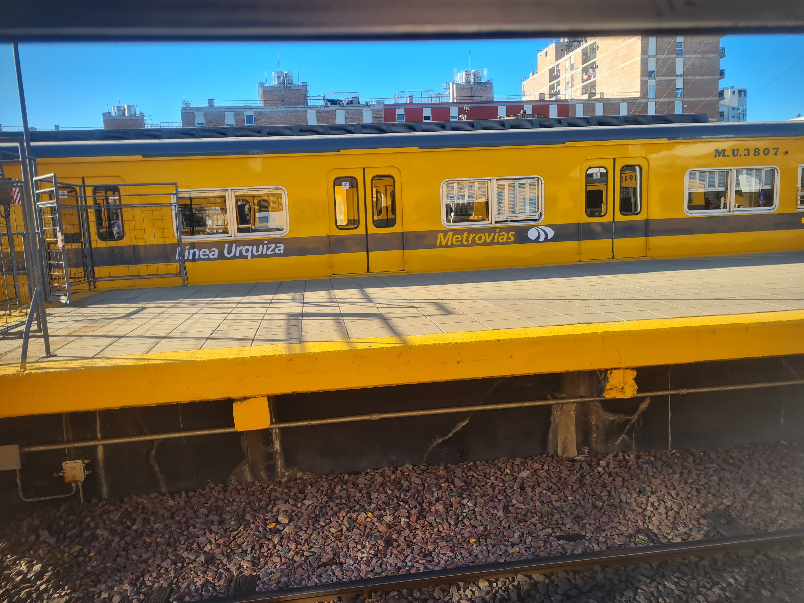

Seguir la energía hasta las ruedas
Para entender cómo se mueve un tren conviene separar tres preguntas: dónde está su fuente de energía, cómo la recibe o transforma y qué equipo hace girar las ruedas. Una locomotora diésel eléctrica lleva combustible y un motor diésel a bordo, pero sus motores de tracción son eléctricos. Una formación eléctrica también tiene motores eléctricos, aunque normalmente recibe la energía de una instalación externa.
La forma del vehículo responde a otra clasificación. Puede haber una locomotora que remolca coches o vagones, o una unidad múltiple con equipos distribuidos entre sus coches. Así, «locomotora», «eléctrico» y «unidad múltiple» describen aspectos distintos del material rodante. Las fotografías del archivo de Andén permiten observar esas diferencias.
- Instalación fijaSubestación y conductor de alimentación→
- CaptaciónPantógrafo o zapatas colectoras→
- Equipos de tracciónAcondicionan y regulan la energía→
- Motores y ejesTransforman la energía eléctrica en movimiento
Catenaria: la captación está sobre el tren
La línea aérea de contacto lleva la alimentación por encima de la vía. El pantógrafo instalado en el techo del vehículo mantiene el contacto con el conductor. La instalación necesita sostener ese conductor en una posición compatible con el movimiento del tren y con el desplazamiento del pantógrafo.
La documentación de capacitación ferroviaria identifica al Roca con catenaria en corriente alterna y un sistema con autotransformadores AT 2 × 25 kV. En el tren, la energía captada por el pantógrafo se acondiciona antes de alimentar los motores de tracción. Los equipos instalados entre la captación y los motores dependen del diseño de la formación.

En esta fotografía conviene separar lo fijo de lo móvil. Los postes, ménsulas y conductores pertenecen a la infraestructura; los coches y sus equipos, al material rodante. Esa separación permite describir la escena incluso cuando una parte del tren queda fuera del encuadre.
Tercer riel: mirar a la altura de la vía
Otra forma de alimentar una formación eléctrica es disponer un conductor junto a la vía, separado de los rieles de rodadura. La captación se realiza mediante zapatas colectoras montadas en el vehículo. Por eso, observar un tren sin pantógrafo no alcanza para clasificarlo como diésel.
La línea Urquiza utiliza tercer riel; su operadora incluye el reemplazo de los cobertores de ese sistema entre las intervenciones de infraestructura. En la imagen del archivo se ve una formación eléctrica con la identificación «Línea Urquiza» sobre el lateral. La identificación de la línea se apoya en la inscripción visible y en el contexto del archivo; el funcionamiento del sistema de alimentación se consulta en la documentación de la red.

Las coberturas y la ubicación baja pueden hacer que el conductor de alimentación pase inadvertido desde un andén. La presencia o ausencia de un cable visible en una foto debe interpretarse junto con la red a la que pertenece el vehículo, sin acercarse a instalaciones eléctricas para identificarlo.
Diésel eléctrica: generación a bordo
En una locomotora diésel eléctrica, el motor diésel mueve un generador o alternador. La electricidad producida se utiliza para alimentar los motores de tracción. El conjunto convierte energía química en mecánica, después en eléctrica y nuevamente en movimiento mecánico en los ejes.
El motor diésel y los motores de tracción tienen funciones distintas. El primero acciona la generación; los segundos producen el esfuerzo que llega a las ruedas. El circuito de potencia se complementa con equipos de mando, refrigeración y servicios auxiliares. La forma de regular la generación y de alimentar los motores depende de la tecnología de cada locomotora.
- CombustibleEnergía química almacenada→
- Motor diéselProduce potencia mecánica→
- Generador o alternadorProduce energía eléctrica→
- Motores de tracciónAccionan los ejes mediante la transmisión final

En la fotografía de la 8252, el número permite individualizar la unidad y la marca NCA identifica la inscripción que lleva. El catálogo del operador presenta varias familias de locomotoras, entre ellas GM GT-22, GM GR-12, GAIA y ALCo RSD16. Para asignar a una unidad una potencia o una motorización concreta hace falta vincular su número con la ficha correspondiente; esos datos no se obtienen solamente del tamaño del capó.
Qué cambia al comparar los dos sistemas
| Pregunta | Alimentación externa | Diésel eléctrica |
|---|---|---|
| ¿Dónde se obtiene la electricidad? | En una red e instalaciones fijas de alimentación. | En el generador o alternador de la locomotora. |
| ¿Cómo entra al vehículo? | Mediante el sistema de captación. | Se produce a bordo a partir de potencia mecánica. |
| ¿Qué impulsa los ejes? | Los motores de tracción y su transmisión. | Los motores de tracción y su transmisión. |
| ¿Qué observar en una foto? | Instalación de alimentación, captación e identificación de la red. | Identificación de la unidad y disposición de cabina, cuerpo y bogies. |
Una consecuencia práctica es que el sonido del motor diésel o la presencia de una locomotora no describen por sí solos toda la cadena de tracción. Para entender el funcionamiento hay que relacionar el vehículo con su circuito de energía.
Una forma ordenada de identificar material
Empezá por las inscripciones legibles: número, línea y marca. Después separá los equipos del vehículo de la infraestructura que aparece a su alrededor. Buscá el sistema de captación y observá la configuración de la formación. Finalmente, contrastá la identificación con una ficha de la operadora, del fabricante o de la infraestructura.
Ese recorrido evita confundir una característica visible con una especificación técnica. Un pantógrafo confirma un modo de captación, pero no determina por sí solo la tensión de trabajo; un número identifica una unidad, pero necesita una referencia documental para asociarlo a un modelo. En el archivo comentado aplicamos esa lectura a otras imágenes propias.
Fuentes y edición
Los esquemas funcionales, las comparaciones y la lectura de las fotografías son elaboración de Andén. Las referencias técnicas se contrastaron con documentación de infraestructura y de operadores. Fotografías del archivo propio bajo CC BY-NC-SA 2.0.
- CENACAF: sistemas de captación de energía, temario técnico
- Metrovías: información institucional e intervenciones sobre el tercer riel
- Nuevo Central Argentino: catálogo de material rodante
- Union Pacific: funcionamiento de locomotoras diésel eléctricas
- Network Rail: captación mediante tercer riel
Redacción y selección: Andén. Revisión de fuentes: .